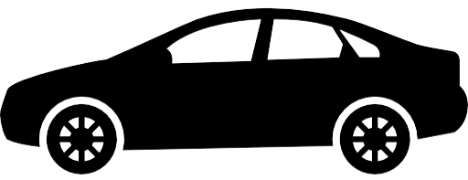

Wrx Sti
4 Door
The Subaru WRX is an all-wheel drive sport compact car manufactured by the Japanese automaker Subaru, originally based on the Impreza created for the World Rally Championship in 1992. Subaru claimed the name WRX stands for "World Rally eXperimental".